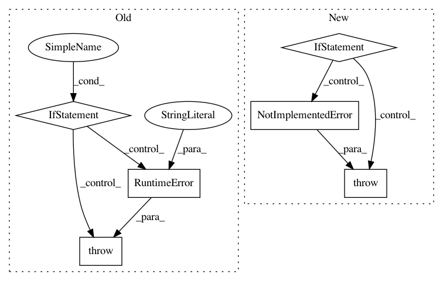

e1f6a3630485309055a3ef681cd50c87376f7cb3,cleverhans_tutorials/mnist_tutorial_keras_tf.py,,mnist_tutorial,#Any#Any#Any#Any#Any#Any#Any#Any#Any#Any#Any#Any#,41
Before Change
// Set TF random seed to improve reproducibility
tf.set_random_seed(1234)
if not hasattr(backend, "tf"):
raise RuntimeError("This tutorial requires keras to be configured"
" to use the TensorFlow backend.")
if keras.backend.image_dim_ordering() != "tf":
keras.backend.set_image_dim_ordering("tf")
print("INFO: "~/.keras/keras.json" sets "image_dim_ordering" to "
""th", temporarily setting to "tf"")
After Change
// Set TF random seed to improve reproducibility
tf.set_random_seed(1234)
if keras.backend.image_data_format() != "channels_last":
raise NotImplementedError("this tutorial requires keras to be configured to channels_last format")
// Create TF session and set as Keras backend session
sess = tf.Session()
keras.backend.set_session(sess)
// Get MNIST test data
In pattern: SUPERPATTERN
Frequency: 3
Non-data size: 6
Instances
Project Name: tensorflow/cleverhans
Commit Name: e1f6a3630485309055a3ef681cd50c87376f7cb3
Time: 2019-01-08
Author: goodfellow@google.com
File Name: cleverhans_tutorials/mnist_tutorial_keras_tf.py
Class Name:
Method Name: mnist_tutorial
Project Name: pyprob/pyprob
Commit Name: 1c758ba9d6c14d9b9d3599e44c3508e2692d8d35
Time: 2018-09-28
Author: atilimgunes.baydin@gmail.com
File Name: pyprob/distributions/empirical.py
Class Name: Empirical
Method Name: unweighted
Project Name: pyprob/pyprob
Commit Name: 1c758ba9d6c14d9b9d3599e44c3508e2692d8d35
Time: 2018-09-28
Author: atilimgunes.baydin@gmail.com
File Name: pyprob/distributions/empirical.py
Class Name: Empirical
Method Name: resample